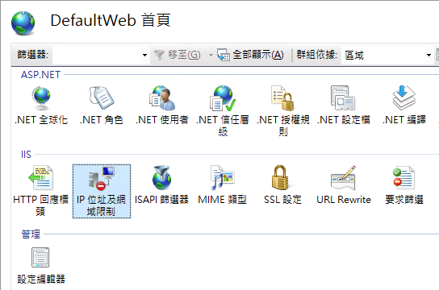
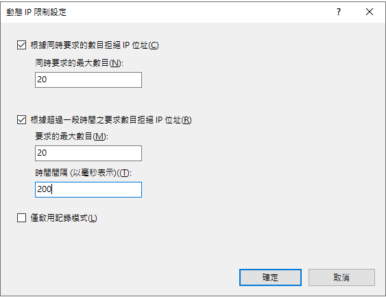
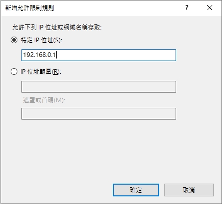

IIS 網站突然狂丟403錯誤！原來是安全性設定在搞鬼
前言
某一天，系統突然開始出現詭異的現象：使用者回報網站時好時壞，重新整理一次可能好，但下一秒又壞了。查看記錄檔發現大量的 403 Forbidden 錯誤，但最讓人困惑的是，同一個檔案，有時候能載入，有時候卻被封鎖。這到底是怎麼回事？
1. 檔案/資料夾權限設定問題
先從最常見的原因開始排查：
- 確認網站資料夾的 NTFS 權限是否正確
- IIS_IUSRS 和 IUSR 使用者需要有讀取權限
- Application Pool 身份對網站目錄需要有讀取權限
2. IIS 設定檢查
- 在 IIS 管理員中確認網站的身份驗證設定
- 檢查是否啟用了正確的驗證方式（如匿名驗證）
- 確認網站綁定設定是否正確
以上全部確認過，都沒有問題，403 依然持續出現。
問題的關鍵：動態 IP 限制設定
以上都查過沒問題之後，只能在網站上重複重新整理，同時盯著 IIS 記錄檔看。記錄檔裡確實有很多 403，但看不出理由。接著注意到一件事：原本 403 的檔案忽然正常了，反而其他檔案變成 403。多重整幾次，每次被影響的檔案都不一樣。
到這裡方向就清楚了。這不是靜態的權限問題，而是動態封鎖——問題的源頭是 IIS 的「動態 IP 限制」功能。這個原本用來防止 DDoS 的機制，把正常的頁面載入請求當成攻擊流量給擋掉了。
讓我用一張圖來說明這個機制是如何運作的：
為什麼會發生這個問題？
現代網站通常需要載入大量的 JavaScript 檔案和其他資源。當使用者開啟網站時，瀏覽器會在短時間內對同一個伺服器發出多個請求來載入這些資源。如果動態 IP 限制的門檻設太低，這些正常的載入請求就可能被誤判成攻擊流量。
解決方案
1. 調整動態 IP 限制設定


這是我原先的設定，門檻太低導致一般使用者也被擋。修改為以下設定：
「同時要求的動態 IP 位址」：50
現代網站首次載入通常會在短時間內觸發多個資源請求，設 50 可以避免誤判正常的頁面載入行為。「要求的最大數目」：100
一般使用者很少在短時間內產生大量請求，設 100 允許正常的頁面切換和操作。「時間週期」：5 秒（5000 毫秒）
縮短計算週期，讓封鎖更快失效，也讓正常使用者不會被連帶卡太久。DDoS 通常會在短時間內持續發送大量請求，這個設定仍然能偵測到。
2. 設定 IP 白名單
開啟 IIS 管理器
在左側選擇您的網站
找到「IP 位址和網域限制」功能並雙擊
在右側「動作」面板點選「新增允許項目」
輸入要允許的 IP 或 IP 範圍：
單一 IP：直接輸入 IP（如：192.168.0.1）
IP 範圍：輸入網段和遮罩（如：192.168.0.0，遮罩：255.255.255.0）

3. 依請求類型調整安全規則
如果站內有明確的路徑區分（例如 /api/、/static/），可以在 IIS 的「IP 位址和網域限制」針對不同路徑設定不同的動態 IP 限制閾值，不需要對整個站套同一個規則：
- 靜態資源路徑（圖片、CSS、JS）：限制可以放寬，這類請求量大但行為規律
- API 端點：維持中等門檻
- 敏感操作路徑（登入、上傳等）：維持較嚴格的限制
補充建議
如果調整完動態 IP 限制後，403 頻率明顯下降，可以再考慮從資源面下手減少並發請求數量，讓門檻不需要設太鬆：
- 合併 JavaScript 檔案：減少首次載入的請求數
- 啟用瀏覽器快取：回訪使用者不會重新觸發所有資源請求
- 使用 CDN：把靜態資源分流到 CDN 節點，不走 IIS 主站
另外建議定期查一下 IIS 記錄檔，特別是 403 的來源 IP，確認封鎖的是正常使用者還是真的攻擊流量，視情況再調整門檻。
結論
這次的問題排查過程說明一件事：403 不一定是權限設錯，也可能是安全機制誤殺了正常流量。動態 IP 限制的預設值是為了防 DDoS 設計的，套在一般公開網站上門檻往往太低。調整成符合實際流量的數值，並搭配 IP 白名單處理內部或信任 IP，通常就能解決這類間歇性 403。